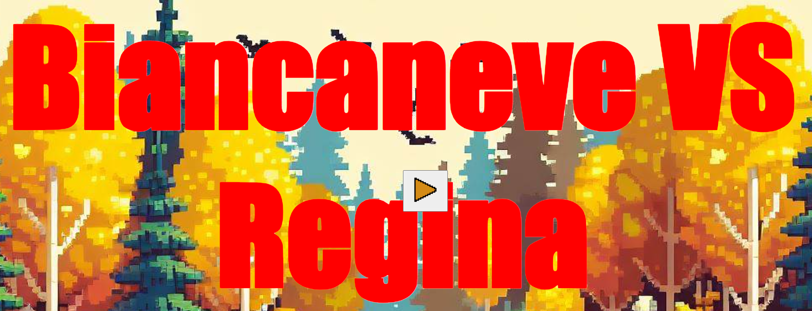
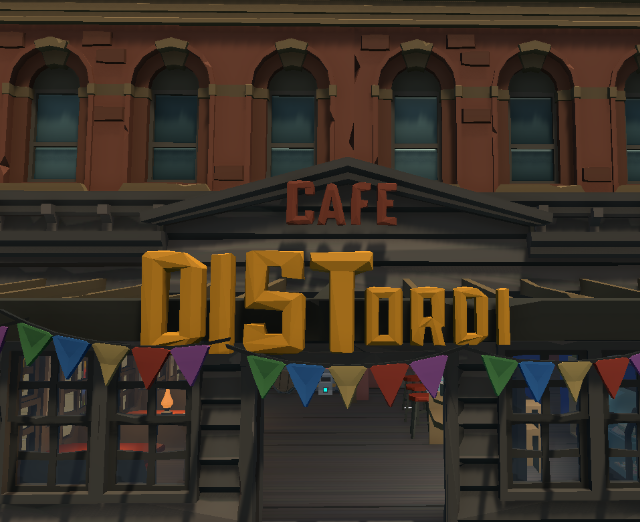
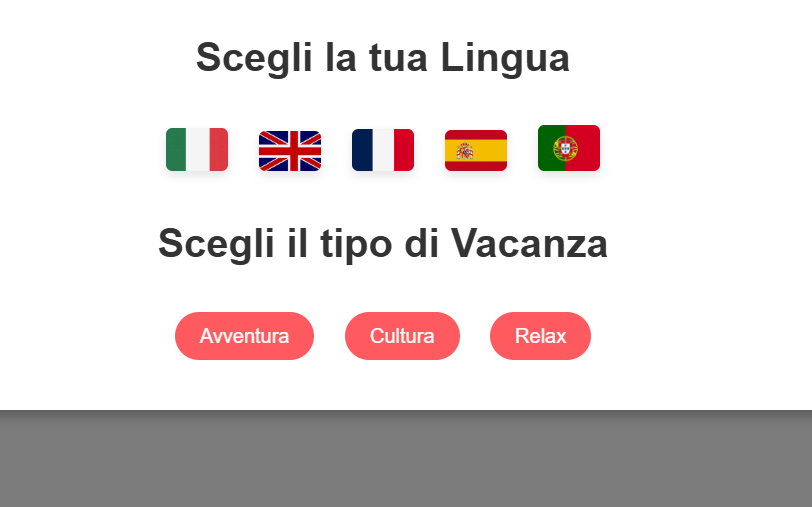

Salve, sono Alessio Cocco! Sono un laureando in Ingegneria Informatica con una passione per la tecnologia e il design. Oltre a essere un property manager, mi dedico alla creazione di siti web, app e videogiochi che uniscono funzionalità e creatività. Dai un’occhiata ai miei progetti qui sotto e scopri come trasformo idee in realtà digitale!
Ruolo: Ideazione e sviluppo completo.
Un gioco interattivo creato in soli 5 giorni. Combina una narrativa avvincente con elementi di JavaScript, HTML e CSS.
Tecnologie: JavaScript, HTML, CSS.

Guarda il progettoRuolo: Programmazione lato server.
Un gioco multiplayer sviluppato in team. Mi sono occupato della logica di rete e del miglioramento del gameplay.
Tecnologie: Unity, Photon.

Guarda il progettoRuolo: Sviluppo e progettazione completa.
Un sito multilingue per fornire consigli ai miei ospiti. Supporta traduzioni dinamiche grazie a JSON.
Tecnologie: HTML, CSS, JavaScript, JSON.

Guarda il progettoPer collaborazioni o domande, contattami qui: